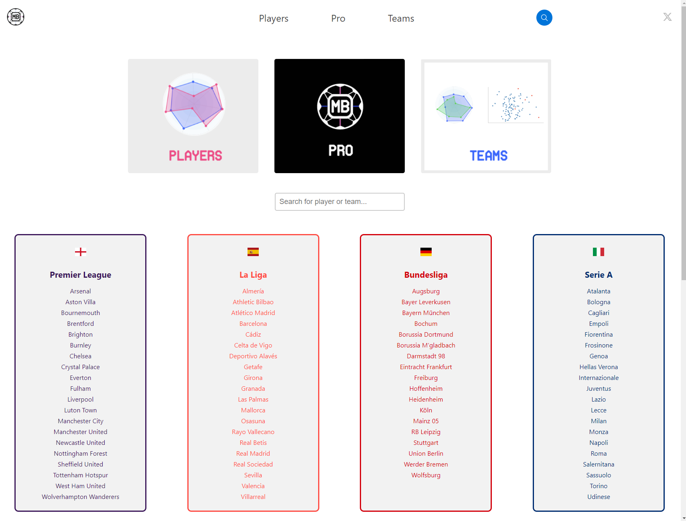
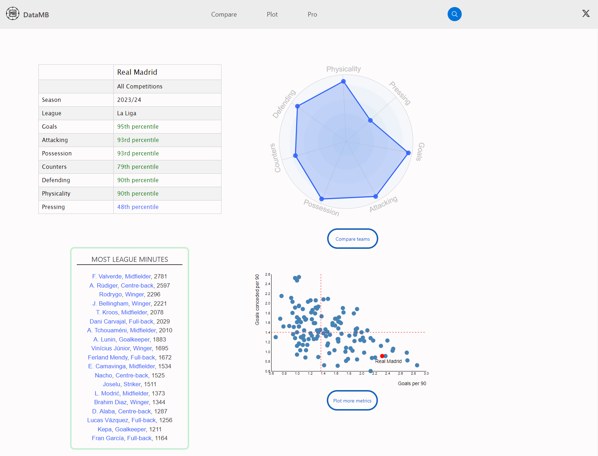
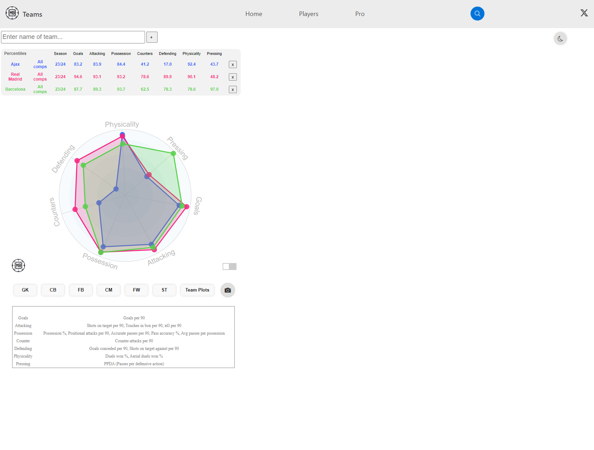
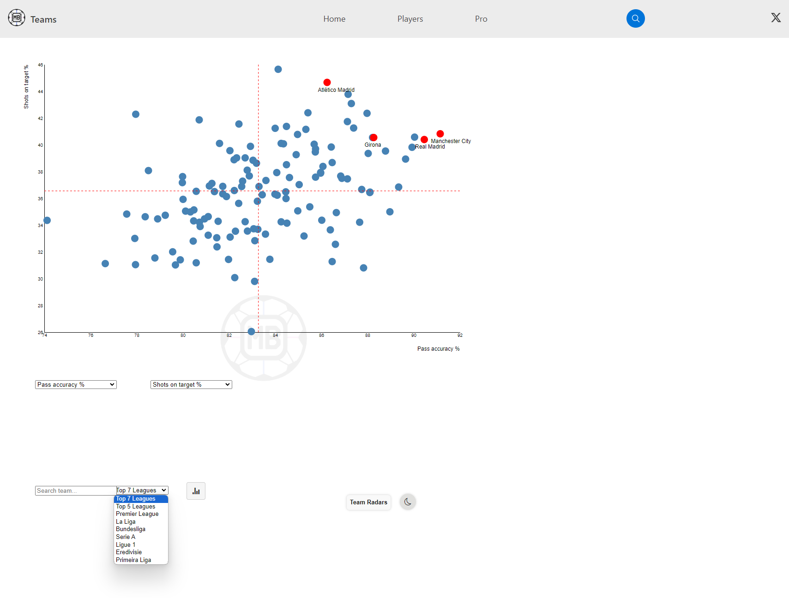

Purpose of the Visualization
- Provides a comprehensive platform for analyzing football players' and teams' performance data.
- Designed for football analysts, coaches, fans, and players to gain insights into performance metrics.
- Facilitates data-driven decisions in player selection, game strategy, and team development.
About the Data
- Data sourced from extensive football match databases including league and international competitions.
- Metrics include goals, assists, defensive contributions, physical performance, and much more.
- Updated regularly to reflect current seasons and player transfers, ensuring relevance and accuracy.
User Interaction and Design
- Interactive search bar allows users to quickly find teams or players across multiple leagues.
- Visual tools like spider charts and scatter plots enhance the interpretation of complex data sets.
- Customizable visualizations enable comparisons based on selected performance metrics.
Effective Design Choices
- Use of percentile tables to benchmark team performance against league averages provides immediate context.
- Spider charts effectively display multi-faceted data in a digestible format, ideal for side-by-side team comparisons.
- Interactive elements like 'compare other teams' button encourage deeper exploration and engagement.
Limitations and Improvements
- Complex data might overwhelm new users; simplifying initial views or adding a tutorial could help.
- While current metrics are comprehensive, inclusion of historical data could provide richer insights.
- Interactive features could be enhanced with AI-driven insights to predict future performance trends.
Example Insights
- Insight into Real Madrid's high rankings in goal scoring and possession indicates strong offensive strategies.
- Comparison of defensive metrics via spider charts highlights areas for potential improvement in tactics.
- Analysis of 'goals per 90 vs goals conceded per 90' scatter plot helps in assessing overall team balance.
Screenshots
Homepage Overview
Percentile Tables
Spider Chart
Scatter Plot
These screenshots show various features of the DataMB platform, including the homepage, percentile tables, spider charts, and customizable scatter plots.